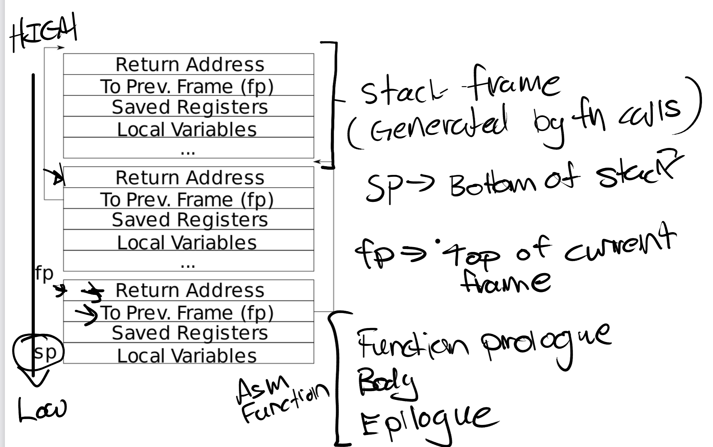

Lab链接：Lab: Traps
Lab源码：momo/MIT-6S081/traps - Gitee.com
用户态切换为内核态发生在以下情形：
- 系统调用
- 软件运行错误：page fault
- 设备发出中断
用户内核态的切换，要让硬件从适合用户程序运行的状态转化为适合内核程序运行的状态，包括：
- 保存32个用户寄存器：内核会使用寄存器，用户程序在寄存器中的值不能被破坏
- 保存程序计数器：内核程序执行完毕后能够从用户程序中断的位置继续执行
- 改为supervisor mode：在内核中需要执行特权指令
- SATP寄存器从user page table改为kernel page table
- 堆栈寄存器指向内核地址
相比用户态，内核态增加了以下权限：
- 读写控制寄存器
- 使用PTE_U为0的页表：PTE_U设置为1用户态可使用
trapoline页表在用户和内核页表虚拟地址一致，映射的都是同一个物理页
trapframe用于保存进程在用户态的相关数据，而context用于保存进程在内核态相关数据
用户态➡内核态
用户进程调用fork系统调用，实际执行如下指令：
|
|
- 向a7寄存器写入系统调用编号
- 执行ecall指令，该指令在硬件层面完成：
- 切换为supervisor mode
- 进入中断处理程序：PC➡SEPC，STVEC➡PC（STVEC事先保存了中断处理程序uservec的地址）
此时进入中断处理程序uservec（此时未切换page table，虽进入内核态但仍使用用户态的页表）
- 保存用户态通用寄存器，用于中断后恢复上下文：
sscratch寄存器事先存储了p->trapframe，交换a0和sscratch的值，使得a0指向进程trapframe的首地址 - 加载内核态上下文：栈指针、内核页表、从
TRAPFRAME中读取usertrap()函数的地址，并将其加载到t0寄存器
|
|
此时进入中断处理程序的第二部分
trap.c中处理
|
|
内核态➡用户态
- STVEC寄存器：保存uservec函数的地址，为ecall指令跳转
- SSCRATCH寄存器：保存trapframe page的虚拟地址
- trapframe的
kernel_sp字段：存储进程的kernel stack的最顶端，下次存储在SP寄存器中 - trapframe的
kernel_satp字段：存储内核页表的物理地址，下次存储在SATP寄存器中 - trapframe的
kernel_trap字段：转入trap处理的内核C函数usertrap()的地址，下次直接跳转至该函数
|
|
1 RISC-V assembly
使用make fs.img命令生成call.c文件的汇编文件call.asm
|
|
回答以下问题：
-
Which registers contain arguments to functions? For example, which register holds 13 in main’s call to
printf?RISC - V 架构，函数调用者在调用前，将参数按顺序依次存储在
a0 - a7寄存器中，然后再调用函数。第24行，
li a2 13指令把立即数13存入寄存器a2，a2存入参数13，a1存入f(8)+1的结果，a0存入格式字符串的地址。 -
Where is the call to function
fin the assembly code for main? Where is the call tog?第26行，
li a1 12指令表明main函数并未调用函数f，编译器直接计算f(8)+1的结果并存入寄存器a1。 -
At what address is the function
printflocated?第34行，注释指出prinf函数位于用户空间虚拟地址0x638处。
-
What value is in the register
rajust after thejalrtoprintfinmain?第30行，
auipc ra, 0x0把当前PC值高 20 位加载到ra寄存器，jalr 1544(ra)跳转到printf函数，同时把下一条指令（地址为 0x38）的地址保存到ra寄存器。所以，在执行完jalr指令跳转到printf函数后，ra寄存器的值是 0x38。
2 Backtrace
题目
实现backtrace()函数：遍历当前程序的调用栈，按照函数调用的先后顺序，从当前时刻起，逆向打印每个栈帧中的返回地址
运行bttest，该程序调用sys_sleep，sys_sleep()调用backtrace()打印当前堆栈上的函数调用列表。打印的结果如下：
|
|
退出qemu，执行addr2line -e kernel/kernel命令并输入上述结果，得到地址对应的函数名和所在文件
在终端中输入 addr2line -e kernel/kernel 命令，并输入之前获取到的地址信息。该命令解析输入的地址，得到其所处在哪个文件中的哪个位置，为调试进一步提供关键线索。
|
|
思路
-
在
kernel/riscv.c文件中添加用于读取当前栈顶寄存器值的函数r_fp -
使用
PGROUNDDOWN()获取栈所在页的顶部地址 -
下图展现了xv6栈的结构，栈帧从内存较高地址处起始，随着函数调用朝内存较低方向生成栈帧。
在遍历当前程序内核栈的过程中，针对每一个栈帧，打印该栈帧的函数地址，即 “返回地址（return address）”。同时，借助 “to prev frame（指向前一个栈帧）” 所指示的信息，获取调用该函数的栈帧的地址，进而推进栈的遍历流程 。

源码
|
|
指针所指向的地址虽然可表示为 64 位整数，但要获取指针所指向的数据内容，
fp的类型理应定义为uint64*，而非uint64。这是因为只有uint64*类型才能正确解引用，从而访问到目标数据。当
fp被定义为uint64类型的指针时，对该指针执行-1操作，实际上是在内存地址上向前移动了8 byte。这是由于在 64 位系统中，uint64类型数据占据 8 个字节，指针运算会根据其所指向的数据类型大小来调整偏移量 。
运行结果：